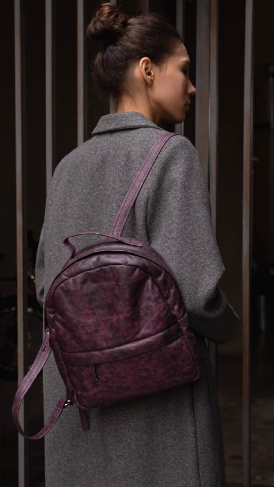
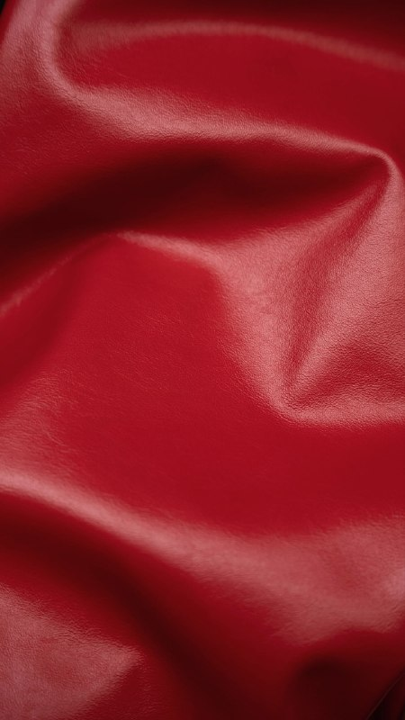
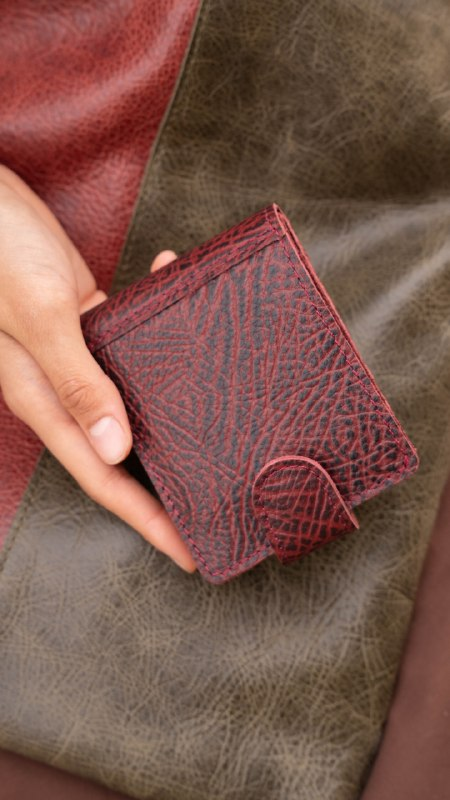
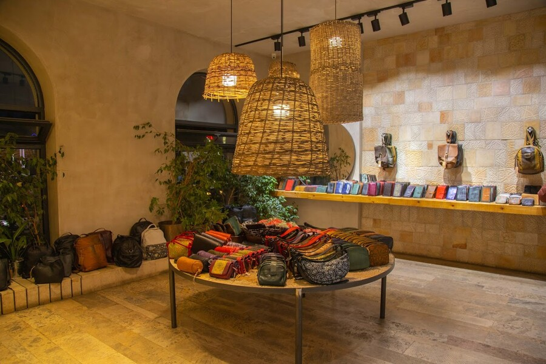
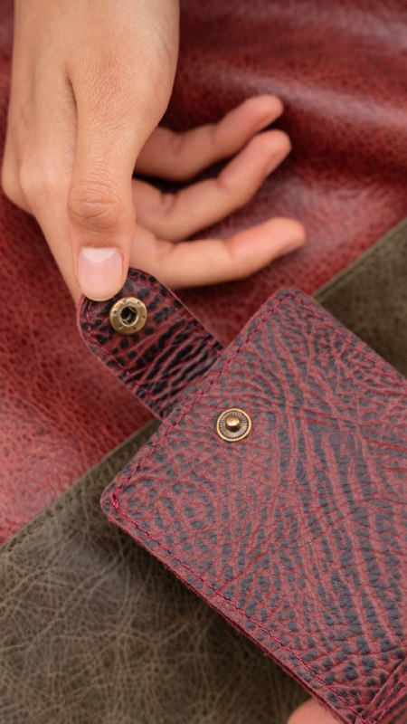
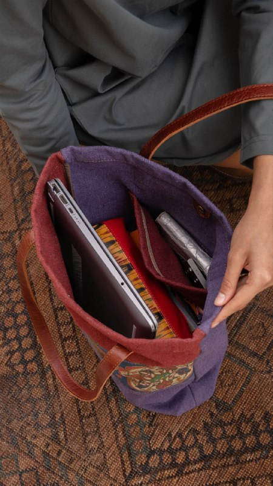

Кожаная сумка
ZARAFOT
650 000 сум
 8 фото
8 фото
Натуральная кожа37 × 23 × 14 см
Рассмотреть
Kanishka · Ташкент
Сумки, одежда и небольшие аксессуары из ташкентской мастерской Алексея Маньшаева.
TASHKENT, UZBEKISTAN
Небольшие серии


Сначала — форма и материал. Откройте изделие, чтобы увидеть его внутри и в деталях.
Кожаная сумка
650 000 сум
8 фото
Кожаное портмоне
160 000 сум

4 фото
О Kanishka
Kanishka — ташкентская мастерская дизайнера Алексея Маньшаева. Здесь создают одежду, сумки и аксессуары из натуральных материалов: небольшими сериями, с ручной работой и вниманием к конструкции.
Кожа, хлопок и канвас дают разное ощущение вещи. У кожаной сумки заметны фактура и складки, у текстильной — переплетение нитей и мягкость формы. В коллекции есть и спокойные оттенки, и яркие сочетания цвета.
Знакомство с изделием начинается с деталей: как соединены части, где расположен карман, как устроены ручки и застёжка. На страницах моделей мы собрали общие, внутренние и крупные ракурсы — чтобы рассмотреть работу до визита в магазин.
Заглянуть в мастерскую ↗Работа с материалами
Материал задаёт форму и характер изделия. Показываем его на вещах из нашей коллекции.

На портмоне PITAK 4 видны рисунок поверхности, сгибы и крепление кнопки. У сумок и рюкзаков кожу можно рассмотреть и снаружи, и на деталях: ручках, клапанах и соединениях.
Для ухода выбирайте средство под конкретный тип кожи и сначала проверяйте его на незаметном участке.
Изделия из кожи ↗
PAKHTAKOR 2 сшита из хлопкового канваса. На внутреннем ракурсе видны ткань, отделения и то, как размещаются вещи. Переплетение нитей и сочетание материалов здесь становятся частью дизайна.
У тканей и кожаной отделки могут быть разные требования к чистке. Сверяйтесь с ярлыком и рекомендациями мастерской.
Текстильные сумки ↗
В одежде материал воспринимается через движение и посадку. Рубашка KOYLYAK 2W и брюки CHIPOLLINO M выполнены из хлопка; фотографии на людях помогают увидеть пропорции и сочетания в образе.
Перед заказом уточните длину и обхваты: обозначение размера само по себе не показывает посадку.
Одежда из коллекции ↗Мягкость, плотность и фактура влияют на то, как вещь держит форму. Поэтому сумка из кожи и сумка из ткани воспринимаются по-разному даже при похожем размере.
Раскрой, соединение частей и внутреннее устройство работают вместе. В рюкзаке важны отделения и лямки, в небольшой сумке — доступ к содержимому и положение ремешка.
Ручки, кнопки, молнии и края — точки, с которыми вы соприкасаетесь каждый день. Их стоит рассмотреть отдельно: для этого в галереях есть подробные ракурсы.
Близким, коллегам и себе
Сначала выберите комфортный бюджет. Затем рассмотрите подходящие изделия: фотографии, материалы, размеры и цены.
Выберите бюджет выше — здесь появятся подходящие подарки.
Три адреса для примерки и знакомства с коллекцией.